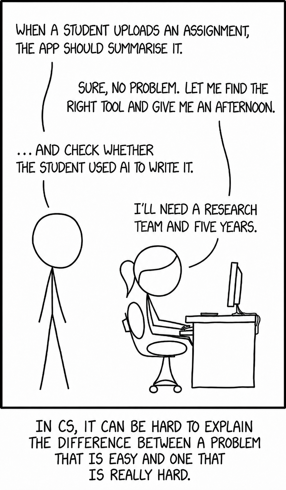

Problem Definition
Last updated on 2026-06-19 | Edit this page
Estimated time: 120 minutes
Overview
Questions
- How should I define my problem for a machine learning model or analysis to answer?
Objectives
- Articulate a clear and measurable AI/ML problem definition
Introduction
In the previous session, we briefly explored creating a problem definition for our worked example.
Now, we ask: how do we make sure our problem defintion is suitable?
It is important to realise that before we start building a solution, we first need to carefully consider defining the problem.
What is achievable using computers changes at pace, often, because of media influence, we are led to believe that AI is all knowing or completely useless. So how do we know if our problem is possible to solve.
An example
Famous cartoon was written just over 10 years ago.

“Tasks” by Randall Munroe, xkcd.com/1425, used under CC BY-NC
2.5.
Now this problem of identifying is this image a bird is something you could have a go at solving during this week. A more accurate cartoon for 2026:

The message that was trying to be conveyed here was that the additional feature being asked for doesn’t seem to have moved that far from the original but the task is much more difficult. That is because there are things that are much easier for computers to do
Framing our worked example
Now is a good time to understand the framing of our worked example. By this, we mean defining what kind of machine learning problem we have performed so we can communicate it clearly, both for ourselves and to others who understand this machine learning terminology.
🕒 Terminology Time
Let’s clarify two important terms that we have already seen:
Features
Features are the individual pieces of information that you use to help make predictions. They are the inputs to your model.
Examples:
- The closing duration of a blink event
- The length and width of flower petals
- A person’s age, height, and cholesterol level
- A pixel value
Labels
Labels are the known target values associated with each example in the training data. We can often think of them as the answers you’re trying to predict or explain.
Examples:
- The type of blink (half blink, full blink)
- The type of flower (iris setosa, iris virginica, etc.)
- Whether a patient has a disease
- Is this image a cat?
What is Supervised and Unsupervised Learning?
The worked example we have just completed is a supervised learning example. We had known target values for training examples that we used the features to try and predict. The goal was to train a model that learns the relationship between the inputs and the outputs so it can predict the target label for new data.
Supervised learning is typically used when:
- You have data that includes both inputs (features) and known outputs (labels).
- You want to see how well you can predict a known outcome from the inputs.
Unsupervised Learning is typically used when:
You do not have known target labels. The goal is to explore the structure of the data itself, for example by finding groups, simplifying complex datasets, or identifying useful patterns.
There are two very common subclasses of supervised learning. In
our example we were predicting a specific binary class (half-blink,
full-blink) but we could also be trying to predict a continous value
(e.g., the height of a person). These two types of problem are labeled
as categorical or continuous.
🕒 Terminology Time
| Label Type | Description | Example Values |
|---|---|---|
| Categorical | Data divided into distinct groups or categories |
['Yes', 'No'] or
['UK', 'France', 'Spain']
|
| Continuous | Numeric data that can take on any value within a range (measurable quantities) |
3.5, 98.6, 12.0,
4.2
|
So, we can describe the problem we just looked at as a
supervised binary classification problem.
If we are dealing with unsupervised learning, we have a different common split:
🕒 Terminology Time
| Unsupervised Task | Description | Typical Goal |
|---|---|---|
| Clustering | Grouping data points based on similarity (no predefined labels) | Discover hidden groupings or patterns |
| Dimensional Reduction | Simplifying data by reducing the number of features | Visualisation or Understanding |
“Simply, are we trying to group similar things, or reduce complexity in our dataset?”
If you want to find groups or clusters in your data.
Example: - If we just had closing duration and opening duration we could look for distinct groups within the data.
Clustering is used when:
- You have unlabelled data.
- You suspect some structure or grouping exists and want the algorithm to discover it for you.
Dimensionality Reduction
You want to simplify your data by reducing the number of features, while preserving important structures or relationships.
Example: - You have 100’s of features about petals you believe that some a redundant and you want to reduce the overall number of features.
Dimensionality reduction is used when:
- Your dataset has many features, and you want to:
- Visualise it more easily
- Reduce noise or redundancy
- Speed up future modelling
You can think of it as compressing data while keeping the most important patterns.
These two sections are not mutually exclusive you may want to reduce dimensionality and then look for patterns. Often a problem might start with unsupervised learning to create labels that you then go on to use in supervised learning. The categories are broad and there are aspects of machine learning not covered here. Treat this as a framework to be able to discuss about machine learning problems.

Create a scatter plot using only the duration features
plt.scatter(df_blinks_c[“closing_duration”], df_blinks_c[“opening_duration”], alpha=0.7)
plt.xlabel(“Closing duration”) plt.ylabel(“Opening duration”) plt.tight_layout() plt.show()
In this plot, each point represents **one blink event**. The position of the point is based only on the timing features. We are not using the blink type labels here, so the plot shows what we might see if we had an unlabelled dataset.
We notice that the points do not split into two very clear groups. Instead, many of the blink events sit in a shared region, with some points spread further away. This suggests that there is **some variation in the blink timing features**, but there is not an obvious visual separation into two distinct clusters.
This is an important part of unsupervised exploration. **Sometimes the data forms clear groups. Sometimes it does not.** Both outcomes are useful, because they help us understand whether the features we have created contain strong structure.
#### Adding the labels back for interpretation
Now let’s make the same plot again, but this time we will use the known blink type to colour the points.
This no longer works as an unsupervised approach anymore, because we are now using the labels for interpretation. However, it is a useful teaching step. It lets us ask: **If we hide the labels during exploration, do the natural patterns in the data line up with the labels we already know?**
```{python}
# Create a scatter plot and colour the points by blink type
plt.figure(figsize=(7, 5))
for blink_type in sorted(df_blinks_c["Blink_type"].unique()):
# Keep only rows for one blink type
blink_data = df_blinks_c[df_blinks_c["Blink_type"] == blink_type]
# Plot this blink type
plt.scatter(blink_data["closing_duration"], blink_data["opening_duration"], alpha=0.7, label=blink_type)
plt.xlabel("Closing duration")
plt.ylabel("Opening duration")
plt.legend(title="Blink type")
plt.tight_layout()
plt.show()
Now we can see how the known full and half blink labels match the visible structure in the data.
If full blinks and half blinks formed two clearly separate clouds of points, that would suggest these two duration features are enough to distinguish the blink types quite easily. However, the colours overlap, that tells us the problem is more difficult. It means that some full and half blinks have similar closing and opening durations.This supports what we saw in the supervised learning section: the duration features contain some useful information, but they do not perfectly separate full blinks from half blinks.
Hopefully this gives you an insight into how we could approach a problem when we do not have labels. We can begin by visualising the features, looking for structure, and asking whether any patterns might correspond to meaningful biological or behavioural differences.
How Can We Articulate the Problem?
A ML problem should:
- be Clear: The question should use precise, unambiguous language that explicitly defines the objective.
- be Measurable: The problem should involve inputs or outputs that are well-defined, observable, and quantifiable.
- be Feasible: The required data should exist (or be collectible), be accessible, and be sufficient in both quality and quantity.
- add Value: The answer to the question should aim to generate some value to offset the resource it is consuming.
This is not an exhaustive checklist. Other factors, such as the scope, reproducibility, or specific project priorities, may also be important. If you’re unsure, don’t hesitate to ask for guidance.
💡 “Ethical consideration should not be treated as an optional technical requirement”
A project might satisfy all of your criteria and still be inappropriate or harmful.. For that reason, ethical reflection should be treated as an ongoing consideration throughout your project. We will spend dedicated time during the week to emphasise how important Ethics is in AI.
We can consider some examples to better understand why these factors are important.
“Can we use AI to look at diseases in crops?”
- The task is vague – “look at” doesn’t describe a specific ML
task.
- “Diseases in crops” is broad – which disease? which crops?
- It’s difficult to interpret and action meaningfully.
- This is not a bad starting place, but it is a bad finishing place.
-“Can we predict the presence of leaf rust in wheat crops using drone image data?”
Why it’s better:
- Specifies the task: predict the presence of a disease.
- Identifies a specific disease (leaf rust) and crop
(wheat).
- Defines the data source (drone image data).
- These elements narrow the focus, resulting in a much clearer
objective.
“Can we predict how bad a patient’s tumour is?”
- “bad” does not have a precisely defined range
- If the output lacks consistent, measurable categories then it is unsuitable for model training
- “Can we classify tumour types from MRI scans (benign vs malignant)?”
Why it’s better:
- Defines a binary, clearly labelled classification task.
- Uses structured input data (MRI scans).
- Aligns with typical medical data used in supervised learning.
📝 Breakout Task: Reflect on Your Problem Definition
- Discuss in your group:
- What was your problem definition before today?
- Can you see any areas where your definition could be refined?
- What was your problem definition before today?
Be prepared to share one insight or a question with the group.
How do I know if I want data analysis, machine learning, or AI? (and what is the difference?)
These terms are often used together, and sometimes used interchangeably, but they do not all mean exactly the same thing.
At a simple level:
Data analysis is usually when we want to increase our understanding of the data you already have. You might summarise it, visualise it, compare groups, look for patterns, or test whether relationships exist.
Machine learning is usually about building a system that can learn patterns from data and use those patterns to make predictions, assign labels, detect structure, or support decisions on new data.
Artificial intelligence (AI) is generally a broader term. It can include machine learning, but it can also include other approaches that aim to make computers behave in ways we might describe as intelligent, such as reasoning, planning, search, rules-based systems, or generative systems. Often it is used to describe LLM’s (i.e., Co-pilot, ChatGPT)
A useful way to think about it is:
- data analysis helps you understand
- machine learning helps you predict or automate
- AI is the wider area that may include machine learning along with other methods
These boundaries are not always strict, and real projects often involve more than one of these. For example, you may begin with data analysis to understand your dataset, then use machine learning to make predictions, and later describe the overall system as part of an AI workflow.
A simple way to tell the difference
Ask yourself what you are trying to do.
If you are mainly trying to answer questions like:
- What happened?
- What patterns can I see?
- How do groups or variables differ?
then you are probably starting with data analysis.
If you are mainly trying to answer questions like:
- Can I predict an outcome for a new case?
- Can I classify this image, text, or sound automatically?
- Can I detect patterns that would be difficult to define manually?
then machine learning may be useful.
These are not completely separate categories. Many real projects begin with data analysis to understand the data, check quality, and define the problem more clearly before deciding whether machine learning is appropriate.
If you are talking more broadly about systems that make decisions, generate content, reason over information, or combine multiple techniques, then you may be discussing AI.
Why this distinction matters
Not every problem needs machine learning.
Sometimes the most useful and appropriate outcome is a clear analysis of the data, rather than a model. In many projects, the immediate need is to understand what is in the dataset, whether it is reliable, and whether it can support the question you want to answer.
For example, you may want to:
- summarise survey responses
- compare outcomes between groups
- measure change over time
- explore relationships between variables
- identify unusual values or possible data quality problems
- produce figures or tables to support decision-making
These are all important data tasks, but they do not necessarily require machine learning.
At the same time, it is still worth understanding how machine learning might help. Even if your current goal is data analysis, learning how machine learning problems are framed can help you recognise when machine learning may become useful later.
Data analysis and machine learning often work together
It is often helpful to think of data analysis and machine learning as related tools rather than competing choices.
Data analysis is often the place to start. It helps you:
- understand what your variables mean
- check whether the data is complete and sensible
- identify patterns, gaps, bias, or noise
- decide whether modelling is realistic
- clarify what question you are really trying to answer
Machine learning may then become useful if your goal changes from understanding the data you have to doing something more automated with it, such as:
- predicting a future outcome
- classifying new examples
- clustering similar examples
- detecting patterns at scale
- building a system that can be reused on new data
In other words, data analysis often helps you decide whether machine learning is appropriate, and machine learning often depends on good data analysis to work well.
A useful question to ask
Before deciding what approach you need, ask:
Am I mainly trying to understand the data I already have, or am I trying to predict something unknown from it?
If you are mainly trying to understand the data you already have, data analysis may be the best starting point.
If you are trying to predict, classify, automate, or generalise to new data, machine learning may be helpful.
If you are working with a broader system that combines decision-making, language, generation, reasoning, or multiple computational techniques, you may be working in the wider area of AI.
Let’s consider an Example
Consider the difference between these questions:
How many patients missed their follow-up appointment? This is mainly a data analysis question. You are summarising what has already happened.
Can we predict which patients are likely to miss their follow-up appointment? This is a machine learning question. You are trying to use existing data to predict an outcome for new cases.
Can we build an intelligent assistant that helps clinics identify at-risk patients and suggest interventions? This is a broader AI question. It may include machine learning, but it also involves a wider system and a larger task.
A balanced way to think about it
You do not need to treat this as a strict either-or choice.
In many real projects:
- data analysis helps you understand the problem
- machine learning helps you model or automate part of it
- AI describes the wider system or application context
So even if data analysis is your immediate need, it is still useful to understand machine learning. It helps you judge whether your data could support prediction later, whether automation is realistic, and whether machine learning would add value rather than complexity.
Machine learning should not be used simply because data is available. It should be used when it matches the problem you are trying to solve and when it offers something that simpler analysis cannot.
Breakout Task
Think about your project, dataset, or research question, or one you are familiar with.
In small groups discuss the following:
- Is your immediate need data analysis, machine learning, or a wider AI system?
- Are you mainly trying to understand existing data, or make predictions on new data?
- What could you learn from analysis first?
- In what ways might machine learning become useful later?
- Would AI add real value here, or is it being used as a vague label?
What does success look like?
Where are you now and what would/does your process look like?
With a magic wand what does the end of this week look like?
Does the result of your problem definiton get you where you want to be?
How important is accuracy when comparing your current solution and your devised AI/ML solution.
Need Examples to clarify.
Challenges
🦞 Problem Scenario 1
New UK fishing legislation has forced boats to release lobsters under a certain weight. However, weighing lobsters on a boat is costly and cumbersome, so the fishing industry is exploring more efficient ways to gauge lobster weight.
A dataset from a group of marine biologists in Canada includes the length and weight of thousands of lobsters caught along various parts of the coastline. They want to know if this existing data could be used to estimate the weight of a lobster from its length, as length is more easily captured through pre-existing on-board imaging systems.
What type of ML problem is this?
- Supervised or Unsupervised?
- Classification, Regression, Clustering, or Dimensionality
Reduction?
- What are the inputs and outputs?
Also discuss: - What might a clear problem definition look like? - What considerations do we need to give the data?
- ✅ Supervised Learning
- ✅ Regression — because the task is to predict a
continuous numeric output (weight) from an input (length).
-
Inputs (features): lobster length
- Output (label): lobster weight
A clear problem definition could be:
“Can we predict the weight of a lobster based on its length measurements using a regression model trained on historical length-weight data from Canadian lobster populations?”
Data considerations:
- The data comes from Canadian lobsters, so we should check if growth patterns are similar for UK lobsters, or if a local dataset is needed for best accuracy.
- Ensure the data covers the full range of sizes relevant to UK fishing regulations, or risk poor predictions at critical cutoffs.
🚜 Problem Scenario 2
A group of agricultural researchers have acquired hand written soil data records from several different farms. These logs record moisture, pH, and nutrient levels every week. The researchers hope to discover natural groupings of soil conditions across the region to better target fertilizer treatments.
What type of ML problem is this?
Supervised or Unsupervised?
Classification, Regression, Clustering, or Dimensional Reduction?
What are the inputs and outputs?
Also discuss:
What might a clear problem definition look like?
What considerations do we need to give the data?
✅ Unsupervised Learning
✅ Clustering — because the goal is to uncover natural groupings (clusters) without pre-labelled outcomes.
Inputs (features): sensor measurements (moisture, pH, nutrient levels)
No explicit outputs (labels) since the task is to find structure.
A clear problem definition could be: “Can we identify distinct clusters of soil conditions based on moisture, pH, and nutrient levels to guide targeted fertilizer application?”
Data considerations: Individual farmers may have different standards, leading to inconsistencies or mismatches between data.
Instruments may differ between farms and this may also lead to inconsistencies between data sets.
Applying it to your problem
Challenge
Take some time to think about your own dataset and research question (or a project you hope to start). Try to use what we’ve covered in this session to explore:
What type of ML problem is this?
Supervised or Unsupervised?
Classification, Regression, Clustering, or Dimensionality Reduction?
What are your inputs (features) and outputs (labels), if applicable?
How would you write a clear problem definition?
Are there any data context considerations or ethical risks?
Use this exercise to create the first slide of your slide deck. You will be using your slide to introduce yourself and your problem to the group.
This afternoon you will introduce yourself and your problem officially.
You will have a maximum of ONE MINUTE so plan accordingly.
Template is in your download folder
Focus on introducing yourself (brief) and your problem definition
Send your slide to ai-bootcamp@aber.ac.uk
Any questions please ask
 .
.
Key Points
- Defining your problem clearly is a critical step in any ML project. A poorly defined question can lead to poor or even meaningless results.
- Machine learning is best suited for tasks that play to computational strengths (e.g., pattern recognition, scale, consistency).
- A good ML problem is clear, measurable, feasible, appropriate for ML, and ethically sound.
- Developing an understanding of the shared vocabulary is essential for clearly categorising and efficiently discussing your problem type.
- The context of your data is crucial for understanding the limitations of your analysis and the conclusions you can reliably draw.
For example:
You could ask your phone to detect duplicate photos in your gallery, even if they’re slightly resized or compressed, a task that could take a person days to do accurately by eye (computers are great at precise, large-scale comparisons, humans not so much).
But to asking your phone to pick out the photo that best captures the mood of loneliness, means nothing to your phone and is a problem that would require a complex definition and training process to achieve (intuitive for humans, not for machines).
Part of defining your ML problem is considering whether it plays to these computational strengths, or whether it risks tackling something machines are less well suited to handle.
Final note

“Here to Help” by Randall Munroe, xkcd.com/1536, used under CC BY-NC
2.5.
None of this is easy, so try not to get discouraged.
Defining a good ML problem, and understanding your data’s limitations, is challenging work.
Remember, there is no silver bullet, and we’re here to help you navigate it.